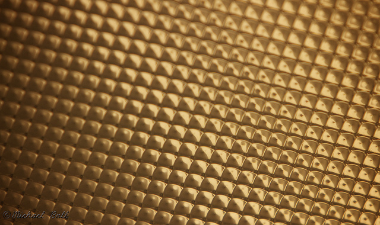

The Light on Flickr.
Via Flickr:
I was bored one day and looking for interesting things in my dorm… this is the ceiling light and is at the minimum focus distance for the 70-200 which made some really interesting DoF
It’s my attempt at something a little more abstract.